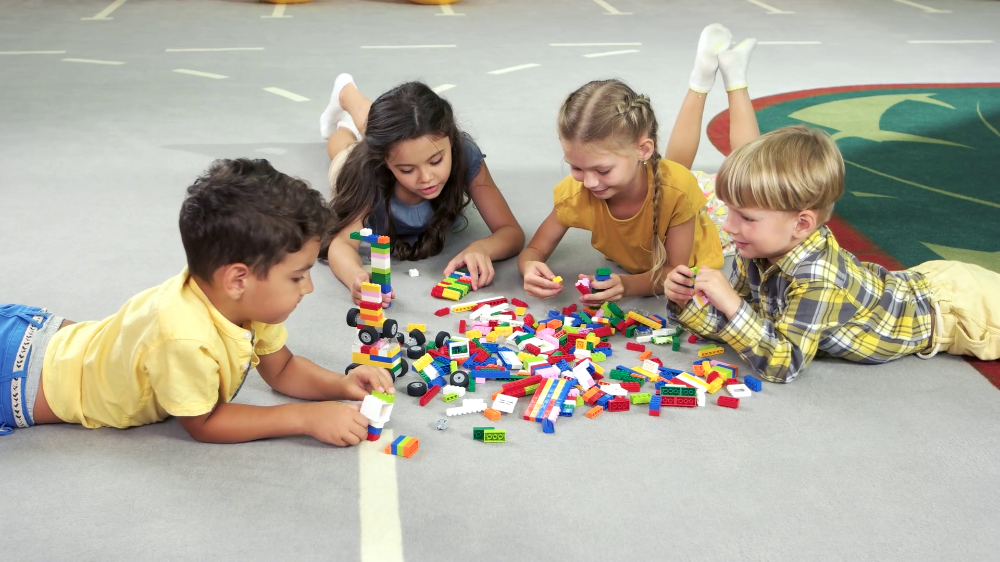

Welcome to Joy of Learning!
Your journey to knowledge starts here.

JoyWithLearning is a company that aims to develop a system that performs sentiment analysis on videos of dyslexic children while they play educational games designed specifically for them. By leveraging computer vision techniques, the system will automatically detect and analyze facial expressions to assess the children's emotional states during gameplay. This analysis will help in understanding how different game elements impact their emotions, allowing for the optimization of game design to better support their learning and emotional needs.